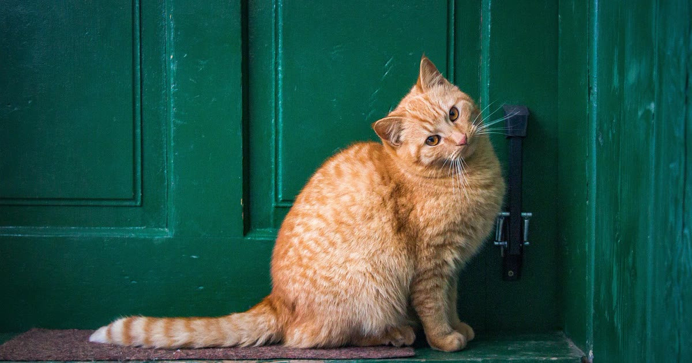

A porta eletrônica com reconhecimento facial usa duas câmeras infravermelhas para identificar visualmente o pet, abrindo apenas para o animal reconhecido — uma alternativa às tecnologias de microchip e RFID (mecanismo descrito por Olhar Digital, retrieved 2026-08-22).
Não exige que o pet tenha microchip implantado nem que use um medalhão na coleira — a identificação é puramente visual, o que pode ser conveniente para quem prefere não depender de nenhum acessório físico no animal.
Faz mais sentido para quem não quer lidar com microchip ou acessório extra na coleira, e está disposto a pagar o custo adicional pela conveniência de identificação puramente visual.
A porta com reconhecimento facial resolve o mesmo problema que microchip e RFID — impedir a entrada de animais não autorizados — mas com uma abordagem sem acessórios físicos, ao custo de um investimento maior.
compare com as opções de microchip e RFID
volte ao guia completo de porta eletrônica para pet
Escrito pela Equipe Smart Pet Gadgets, redação especializada em comparativos de produtos pet no mercado brasileiro. Veja nossa política editorial e como verificamos as fontes citadas neste artigo.
🐾 Confira o preço e a disponibilidade atual no Mercado Livre.
Ver no Mercado Livre →Link de afiliado: podemos receber uma comissão por compras feitas através deste link, sem custo adicional para você.
Nildo Alves — curadoria de produtos pet no Smart Pet Gadgets. Testa e pesquisa produtos para cães e gatos, cruzando especificações de fabricante com boas práticas veterinárias e dados de mercado.
Sobre o Smart Pet Gadgets · Contato · Política editorial e de afiliados